This visualization is based on CITES Wildlife Trade Database. It records international legal wildlife trade from 2016 to 2017.
The Convention on International Trade in Endangered Species of Wild Fauna and Flora, or CITES for short, is an international treaty organization tasked with monitoring, reporting, and providing recommendations on the international species trade. CITES is a division of the IUCN, which is one of the principal international organization focused on wildlife conversation at large.
There were 67161 records of legal wildlife trade from 2016 to 2017 in the dataset. But 67007 are of 2006.So 2016 and 2017 data don't have to be compared seperately.
We know commonly there are six types of animals in this world: mammals, birds, fishes, reptiles, amphibians,and invertebrates. In this dataset, they use biological classification:taxon, Class, Order, Family Genus. A taxon is a group of one or more populations of an organism or organisms seen by taxonomists to form a unit.Family is one of the eight major taxonomic ranks. It is classified between order and genus. The visualization mainly look at taxon and genus.
Top 10 Taxon traded
The numbers of top 10 taxon traded ranges from around 700 to above 2400. There are four taxon traded above 1000 times. They are Crocodylus porosus, Alligator mississippiensis, Python reticulatus, Crocodylus niloticus.And Crocodylus niloticus has the highest trade record which is 2410. Following are the 10 taxon, as you can see, most of they are crocodile, python, elephant, monkey.
The numbers of top 10 genus traded ranges from around 900 to above 4400. Python
and Crocodylus had been traded over 4000 times.Crocodylus has the highest trade record. Following are the 10 genus, there are still crocodile, python, alligator, monkey but also various plants.
Crocodylu Python Alligator Varanus Acipenser
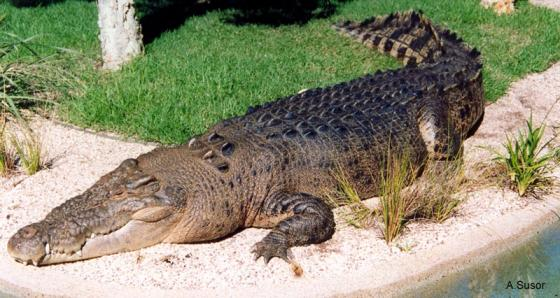
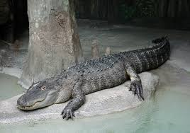
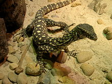
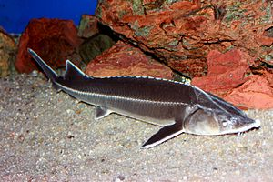
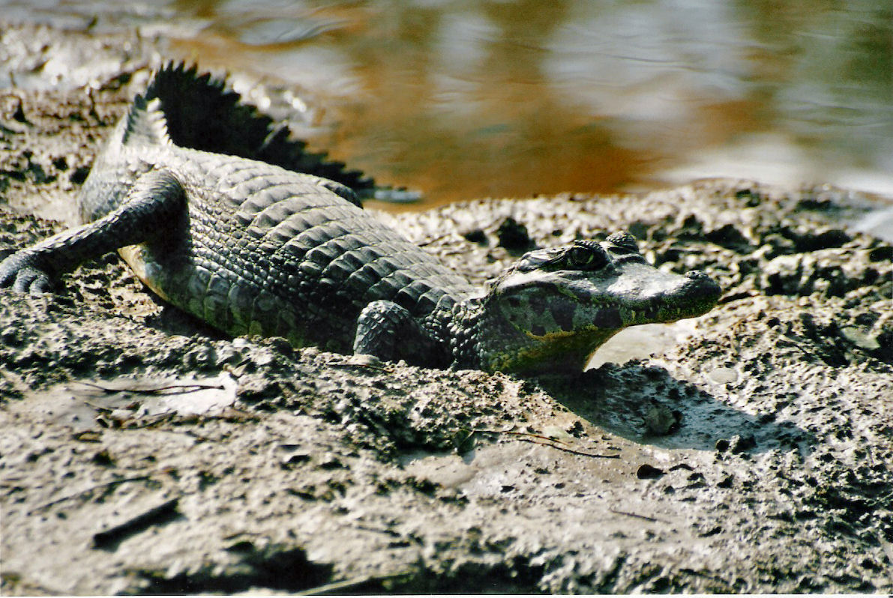
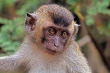
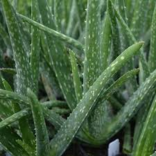
Caiman Euphorbia Macaca Dendrobium Aloe
Most wildlife are traded as live, leather products with records more than 10000, then are specimens,skins,raw corals,trophies,garments,caviar,extract,bodies. The following chart shows that among live, various genus were traded. Among leather products, Crocodylus, Python, Alligator, Varanus, Caiman were traded most. Among specimens, Macaca(Monkeys) was traded most. Among skin, Crocodylus was trades most again. To a degree, it explains why Crocodylus, Python, Alligator are most traded genus.
Purpose letters stands for:
B Breeding in captivity or artificial propagation
E Educational
G Botanical garden
H Hunting trophy
L Law enforcement / judicial / forensic
M Medical (including biomedical research)
N Reintroduction or introduction into the wild
P Personal
Q Circus or travelling exhibition
S Scientific
T Commercial
Z Zoo
From the left and following charts, it is easy to show that most trades are for Commercial use. And among top 10 genus traded, most of they are for Commercial use and traded as leather products.
Import and Export Countries
Most of the frequent importers are on the northern part of earth like America, Canada, East Asia, northern Europe.Frequent exporters are also in northern part including America, Canada, Northern Europe, China, then South East Asia.
United States imported wildlife the Most. Netherlands ranks first in the export country, which is a little surprising.
Among top 10 importers, all of they import wildlife mainly for commercial use. Then is for personal and scientific. Terms imported most by them are as live, then leather product and specimens.
Among top 10 exporters, most of they exported wildlife mainly for commercial use. But there's huge part of nan records in Netherlands.Terms exported most by them are as live, then leather product, specimens and garments. For Netherlands, they traded live the most.
Combining with top 10 genus, US imported every genus the most.
From following chart, it seems that Italy exported every genus the most. So why did Netherlands is the country with highest export number?
From following chart, it is easy to see that actually Netherlands exported plants the most since Mammillaria, Aloe, Euphorbia, Rhipsalis are all pants. And related to real life, it is very reasonable.
Conclusion:
Most of the wildlife are traded for for commercial as live and leather products.Most of the trade happened in northern part of earth. Although they are legal,but still represents a major threat to biodiversity conservation. Animals are captured, killed and traded live or in parts for a number of purposes such as for food and medicine; clothing and ornaments; entertainment, including for pets, zoos and aquariums. Needless to say the trade in black market.Here is a fact table about illegal wildlife trade.
In terms of animal population,it is decreasing every year and some species has already been on the brink of extinction. More strict rules should be set for wildlife trade.

 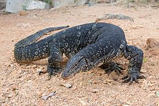
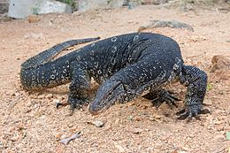

 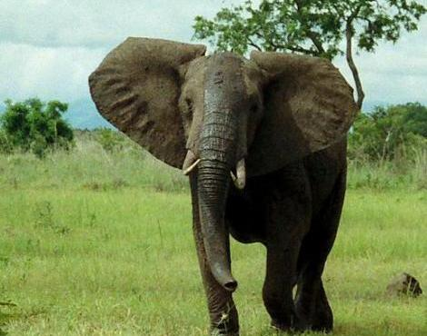
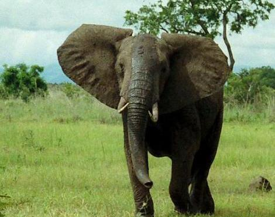
 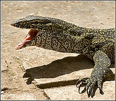
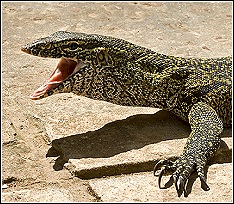